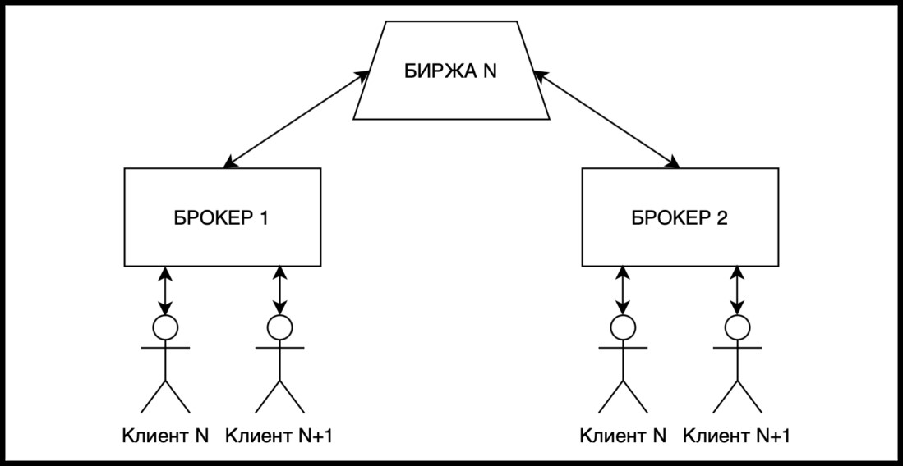

Когда я только начинал, я не понимал, что такое облигации, фонды и акции, какой-то там ИИС с выбором налогообложения, что за технический и фундаментальный анализы, как диверсифицировать портфель и зачем нужен риск-менеджмент. На данном сайте я объясню основные принципы инвестиций и фондового рынка, чтобы у вас была шпаргалка на все вопросы. Также сайт поможет начать инвестировать большому числу людей.
Есть Биржа на которой осуществляется торговля ценными бумагами, эдакий рынок с различными отделами. Но нас на него просто так не пустят, для этого необходим посредник — Брокер, который имеет лицензию и который покупает или продает активы беря за это комиссию. Мы подходим в нужный нам отдел, например, фондовый рынок, и покупаем там тот или иной товар через брокера.
Какого брокера выбрать? Любого, который вам удобен и у которого низкие комиссии, не более 0,05% на сделку. Кстати, недавно проводил опрос в канале, кто каким брокером пользуется, и 440 голосов от 600+ проголосовавших, было отдано за 1 из 9 брокеров.
Перечислю некоторые из известных:
• NYSE — Крупнейшая фондовая биржа США и в мире по капитализации, основанная 8 марта 1817 года. На бирже определяется всемирно известный индекс Доу Джонса для акций промышленных компаний, а также индексы NYSE Composite и NYSE ARCA Tech 100 Index. Кол-во компаний 4100.
• Nasdaq — Основана 8 февраля 1971 года, название происходит от автоматической системы получения котировок, положившей начало бирже. На данный момент на nasdaq торгуют акциями более 3200 компаний.
• Московская биржа — Крупнейший российский биржевой холдинг, созданный в 2011 году в результате слияния ММВБ (Московской межбанковской валютной биржи), основанной в 1992 году, и биржи РТС (Российской торговой системы), открытой в 1995 году. Кол-во компаний 630.
• Санкт-Петербургская фондовая биржа-это одна из первых торговых площадок в России, и вторая по величине и значению фондовая биржа после Московской. Основана в 1997 году и до реорганизации в 2009, называлась Фондовая биржа «Санкт-Петербург».
Последняя, кстати, очень часто косячит:
В 99% случаев вы будете торговать через СПБ Биржу (иностранные ценные бумаги) и Московскую биржу (российские ценные бумаги). Если хотите торговать напрямую с американских бирж, то вам необходимо регистрироваться у иностранного брокера, но и там есть свои минусы и плюсы.
• Лонг — долгосрочная позиция, или длинная. Таковой считается покупка ценных бумаг, которая приносит доход в долгосрочной перспективе, т.е. трейдер открывает позицию с расчётом получения прибыли от роста рынка.
• Шорт — краткосрочная позиция, или короткая. Целью шорта является получение прибыли от падения рынка. В этом случае трейдер берёт ценную бумагу у брокера и продаёт её по определённой цене, после падения выкупает акцию обратно, разницу в цене оставляет себе.
Простыми словами брокерский счет это фактически личный кошелек для хранения средств и ценных бумаг, который открывается лицензированной компанией-брокером.
ИИС (индивидуальный инвестиционный счет) — это также брокерский счет, который могут открыть граждане РФ и который имеет ряд некоторых преимуществ связанных с налогами.
Также разница в том, что при всех плюсах по налогам на ИИС есть один существенный минус — нельзя выводить средства в течение 3 лет, иначе вы потеряете все плюсы по налогам.
^